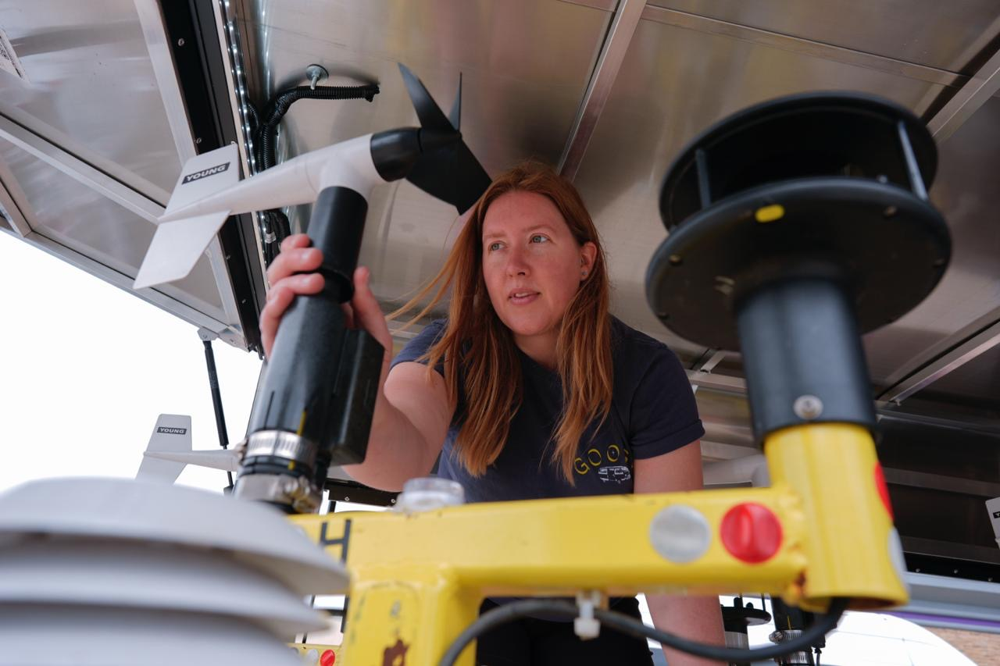

Atmospheric dynamics & climate variability
I study how the atmosphere moves, exchanges momentum, and changes across timescales.
Explore my researchI'm a weather and physics nerd on the path to completing a PhD in Earth, Atmosphere, and Environment. My research explores large-scale atmospheric dynamics and climate variability, S2S forecasting of weather and climate extremes, and the future severe convective perils landscape in the U.S. I'm particularly passionate about mentoring, teaching, and in community engagement. When I'm not at work, you will find me photographing the world around me, playing classical guitar, reading, and enjoying live music.
Atmospheric Dynamicist · Science Educator
I study how the atmosphere moves, exchanges momentum, and changes across timescales.
Explore my researchMy severe weather research looks at how damaging storms and their impacts may change across the United States.
See my publications
I spent my childhood constantly looking up at the sky, wondering at stars, aurora, clouds, storms, lightning, and sunsets. I like to figure out how things work: What makes the wind blow? Why do we usually get thunderstorms in the Midwest in the spring, but not winter? Why do the stars spin across the night sky? My desire to seek out the underlying mechanisms for everything, and then share that understanding with others, initially led me to the field of astrophysics and then education. One day, I found my way to meteorology after teaching a lesson for my high schoolers about STEM careers featuring meteorologists and thought, “Why am I not doing that?!” When the pandemic opened opportunities for online learning, I took a course at NIU, where I connected with my mentor, Dr. Victor Gensini, who encouraged me to apply for graduate school.
So here I am, working toward becoming "Dr. Roufa!" As a PhD candidate at Northern Illinois, I went back to some of those first questions, “What makes the wind blow? How does it affect the weather here? And how do winds around the planet change over time?” I study the physics of how the large-scale atmosphere moves and how these large patterns are connected to severe weather in the U.S. Through this understanding, I hope to improve long range forecasts of weather and climate patterns, because these are important for so many areas of our lives, from farmers deciding when to plant and apply fertilizer, dams deciding when to draw down reservoirs, communities determining when to start a big road construction project, and so much more.

My other research thrust with NIU’s Center for Interdisciplinary Research on Convective Storms focuses on severe thunderstorms, how they’ve changed over time, and how they may continue to change in a warming climate. I use data from decades of observations and measurements and output from newer models to see how storms and their perils (tornado, damaging wind, and hail) may be evolving... things like changes in the frequency of storms and where in the US we may see more or may see fewer storms. Sometimes this work takes me out of the lab and into the field. For the past couple years, I’ve participated in the NIU-led ICECHIP and FARM-led BEST field campaigns to collect data on hail and tornadoes. I get to live out a childhood dream, deploying instruments in storms, working with some amazing and talented colleagues. Our data is helping many researchers advance our understanding of hail and tornadoes and improve forecasts and building safety.
My journey has also been one of resilience. As a first-generation college student from a low-income, single-parent home, I worked multiple jobs—including custodian, retail, and conservation roles—before returning to graduate school as a non-traditional student and mom. Along the way, I’ve built programs that have created lasting impact: from starting a NASA microgravity research partnership nearly twenty years ago that is still ongoing, to guiding thousands of students through high school and university teaching. Today, my work bridges atmospheric research, education, and community engagement. I value persistence, kindness, and collaboration, and I look forward to continuing my path as a scientist and educator.